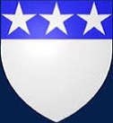

Lord av Douglas. Blev ca 44 år.
omkring 1286. [1]
1330-08-25. [1]
Sir James Douglas (även känd som God Sir James och Black Douglas , c. 1286-1225 skrevs den augusti 1330 [1] ) var en skotsk riddare och feodala herre . Han var en av de högsta befälhavarna under de skotska självständighetskrigen .
Innehåll
Tidigt liv
Han var den äldste sonen till Sir William Douglas , känd som "le Hardi" eller "den djärva", som hade varit den första adliga supportern till William Wallace (den äldre Douglas dog cirka 1298, en fånge i Tower of London ). [2] Hans mor var Elizabeth Stewart, dotter till Alexander Stewart, 4th High Steward of Scotland , som dog cirka 1287 eller tidig sort 1288. Hans far gifte om sig i slutet av 1288 så Douglas födelse måste vara före det; Men förstörelsen av rekord i Skottland gör ett exakt datum eller till och med år omöjligt att fastställa.
Douglas skickades till Frankrike för säkerhets skull under de första dagarna av frihetskrigen, och utbildades i Paris. Där träffade han William Lamberton , biskop av St. Andrews , som tog honom som godsägare. Han återvände till Skottland med Lamberton. Hans land hade beslagtagits och tilldelats Robert Clifford . Lamberton presenterade honom vid det ockuperande engelska hovet för att begära återlämnande av hans land kort efter erövringen av Stirling Castle 1304, men när Edward I av England hörde vems son han var blev han arg och Douglas tvingades lämna. [3]
Allians med Bruce
För Douglas, som nu ställdes inför livet som en jordlös utstöttare i utkanten av det feodala samhället, skulle återkomsten av hans förfäders egendomar bli en överväldigande besatthet som oundvikligen påverkade hans politiska lojalitet. I John Barbours rimmande krönika, The Brus , lika mycket för den unge riddaren som hjältekungen, gör Douglas sina känslor tydliga för Lamberton;
Sir, du förstår,
Hur den engelske tyrannen med tvång
har berövat mig mitt land
Och du får dig att förstå
att jarlen av Carrick påstår sig vara
den rättmätige kungen i detta land.
Engelsmännen, sedan han dödade den mannen,
äro angelägna om att fånga honom om de kan;
Och de skulle också inta hans länder
Och ändå skulle jag tro bo hos honom!
Om det nu är din vilja,
med honom tar jag gott eller ont.
Genom honom hoppas jag att mitt land vinner
Trots Clifford och hans anhöriga.
— The Brus , John Barbour
Detta var ett särskilt dramatiskt ögonblick i skotsk historia: Robert Bruce, Earl of Carrick hade spelat en roll i dödandet av John Comyn , en ledande skotsk rival, den 6 februari 1306 vid Greyfriars Kirk i Dumfries . Bruce, efter att ha skadat Comyn med sin dolk, rusade från kyrkan och mötte sina skötare utanför. Bruce berättade för dem vad som hade hänt och sa, "Jag måste vara iväg, för jag tvivlar på att jag har dödat den röda Comyn,"[2] "Tvivel?" Sir Roger de Kirkpatrick från Closeburnsvarade, "Jag gör säker," ("Jag ska se till," eller "Jag ser till") och rusade in i kyrkan och avslutade Comyn.[2]Bruce tog omedelbart anspråk på Skottlands krona, i trots mot den engelske kungen . Mindre än sju veckor efter mordet i Dumfries kröntes Bruce till kung den 25 mars. Det var medan han var på väg till Glasgow för att träffa biskop Wishart , och sedan till Scone , den traditionella platsen för skotska kröningar, som han möttes av Douglas, ridande på en häst som lånats av biskop Lamberton. Platsen tros traditionellt vara toppen av en kulle i Dumfries och Galloway, som nu är känd som Crown of Scotland . Douglas förklarade sina omständigheter och erbjöd omedelbart sina tjänster;
Och därmed började deras vänskap sann
Att inget misstag kunde ångra
eller minska medan de levde.
Deras vänskap mer och mer skulle frodas.
— The Brus , John Barbour
Douglas skulle ta del av Bruces tidiga olyckor, när han var närvarande vid nederlagen vid Methven och slaget vid Dalrigh . Men för båda männen skulle dessa motgångar ge en värdefull lektion i taktik: begränsningar i både resurser och utrustning innebar att skottarna alltid skulle vara i underläge i konventionell medeltida krigföring. När kriget förnyades våren 1307 hade de lärt sig värdet av gerillakrigföring – känt på den tiden som "hemligt krig" – med hjälp av snabba, lätt utrustade och smidiga styrkor för maximal effekt mot en fiende som ofta låsts in i statisk ström. defensiva positioner.
The Douglas Larder
Allt som återstår av huset som stod på platsen för Douglas Castle är detta 1600-talstorn som räddades från rivning 1938.
Douglas handlingar under större delen av 1307 och tidig sort 1308, även om de till största delen var begränsade till hans hemland Douglasdale , var avgörande för att hålla fienden i söder och befria Bruce till fälttåg i norr. Han skapade sig snart ett formidabelt rykte för sig själv som soldat och taktiker. Medan Bruce kampanjade i norr mot sina inhemska fiender, använde Douglas täcket av Selkirk Forest för att utföra mycket effektiva mobila attacker mot fienden. Han visade sig också vara fullständigt hänsynslös, särskilt i sina obevekliga attacker på den engelska garnisonen i hans eget Douglas Castle , varav den mest kända snabbt övergick i populär historia. Barbour daterar denna incident till palmsöndagen 1307, som inföll den 19 mars.[4] Vissa ifrågasätter om detta datum är för tidigt eftersom Bruce och hans lilla armé ännu inte var etablerade i sydvästra Skottland, vilket föreslår palmsöndagen 1308 – 17 april – som ett mer exakt datum. Men eftersom Barbour uppger att skottarna vid tiden för Douglas Larder ännu inte var etablerade i sydvästra Skottland och faktiskt att Douglas var den enda av Bruces män någonstans i området, finns det anledning att tro att Barbours datum förmodligen är korrekt. Barbour säger att Larder var den första akten mot att etablera sig i den delen av Skottland. [5] [6]
Med hjälp av sin släkting Thomas Dickson, son till Earl Richard Keith och Castellan från Douglas Castle, gömdes Douglas och hans lilla trupp fram till morgonen på Palmsöndagen, då garnisonen lämnade borgen för att besöka den lokala kyrkan. Genom att samla lokalt stöd gick han in i kyrkan och krigsropet "Douglas! Douglas!" gick upp för första gången. Några av de engelska soldaterna dödades och andra togs till fånga. Fångarna fördes till slottet, nu i stort sett tomt. Alla förråd låg samlade i källaren, vinfaten sprack upp och veden användes som bränsle. Fångarna halshöggs sedan och placerades ovanpå högen som tändes. Innan avfärden förgiftades brunnarna med salt och kadaver av döda hästar. Lokalbefolkningen gav snart hela den hemska episoden namnet "The Douglas Larder.[7]
I augusti 1308 träffade Douglas kungen för en gemensam attack mot MacDougalls av Lorn , släktingar till Comyns, kulmen till Bruces fälttåg i norr. Två år tidigare hade Macdougalls avlyssnat och krossat den kungliga armén i slaget vid Dalrigh. Nu väntade de på ankomsten av sina motståndare i det smala passet Brander, mellan Ben Cruachan och Loch Awe i Argyllshire . Medan Bruce klämde fast fienden i en frontal framryckning genom passet, ledde Douglas, helt obemärkt, ett sällskap lojala högländare längre upp på berget och inledde en överraskningsattack bakifrån. Snart slaget vid Pass of Branderförvandlats till en rutt. När han återvände söderut strax efter, gick Douglas med Edward Bruce , kungens bror, i ett framgångsrikt anfall på Rutherglen-slottet nära Glasgow , och gick vidare till en ytterligare kampanj i Galloway . [8]
Roxburgh Falls
Under åren som följde fick Douglas tid att förbättra sina färdigheter som soldat. Edvard II kom norrut med en armé 1310 i fruktlös jakt på en fiende som helt enkelt vägrade att sätta sig fast. De frustrationer som detta uppenbarligen orsakade beskrivs i Vita Edwardi Secundi , en samtida engelsk krönika;
Kungen gick in i Skottland med sin armé men ingen rebell kunde hittas... Vid den tiden gjorde Robert Bruce, som ständigt gömde sig, dem all skada han kunde. En dag, när några engelsmän och walesare, alltid redo för plundring, hade gett sig ut på en razzia, åtföljda av många ryttare från armén, gjorde Robert Bruces män, som hade varit gömda i grottor och skogsmark, ett allvarligt angrepp mot våra män. ..Från sådana bakhåll led våra män stora förluster. För Robert Bruce, som visste att han var ojämlik kungen av England i styrka eller förmögenhet, beslutade att det skulle vara bättre att motstå vår kung genom hemlig krigföring snarare än att bestrida hans rätt i öppen strid.
Edward blev till och med rörd att skriva till påven i impotent raseri och klagade över att "Robert Bruce och hans medbrottslingar, när vi nyligen reste in i delar av Skottland för att förtrycka deras uppror, gömde sig på hemliga platser på samma sätt som rävar."
Under åren före 1314 reducerades den engelska närvaron i Skottland till några betydande fästen. Det fanns både styrkor och svagheter i detta. Skottarna hade ingen tung utrustning eller medel för att attackera slott med konventionella medel. Men detta skapade oundvikligen en viss självbelåtenhet i garnisoner som var tillräckligt försörjda för att motstå en blockad. När skottarna hanterade detta problem svarade de på samma sätt som rävar; och bland de mer listiga av deras bedrifter var Douglas erövring av den mäktiga fästningen vid Roxburgh . Hans taktik, även om den var enkel, var briljant effektiv. Natten till den 19/20 februari 1314 – Skärtisdag och Askonsdag– flera mörka former sågs under pannorna och antogs felaktigt vara boskap. Douglas hade beordrat sina män att täcka sig med sina kappor och krypa mot slottet på händer och knän. Med de flesta av garnisonen fira strax före fastan av fastan , skalnings krokar med repstegar fästa kastades upp på väggarna. Helt överraskade blev försvararna överväldigade på kort tid. Roxburgh Castle, ett av de bästa i landet, förkastades eller förstördes i enlighet med Bruces policy att förneka fiendens starka punkter. [9]
Bannockburn
Huvudartikel: Slaget vid Bannockburn
Den största utmaningen för Bruce kom samma år som Edward invaderade Skottland med en stor armé, nominellt inriktad på avlastning av Stirling Castle , men med den verkliga avsikten att dra ut Bruce och hans män. Den skotska armén, ungefär en fjärdedel av fiendens styrka, var redo söder om Stirling och beredd att göra ett snabbt tillbakadragande in i det vilda landet i väster. Deras position strax norr om Bannock Burn hade emellertid starka naturliga fördelar, och kungen gav order om att för en tid avbryta den hittills utövade gerillataktiken. På morgonen den 24 juni och före striden, säger Barbour att det var då som Douglas gjordes till riddare. Många tror nu att Douglas gjordes till en riddare . [10]Riddarbanderollen etablerades under Edward I. En riddarbanner hade inget kommandoansvar så mycket som större utmärkelser. En riddarbaner kämpade under sin egen fana till skillnad från en riddarungkarl som var begränsad till en pennon . I sin The Brus , John Barbour skriver i boken XV att Douglas kämpade under sitt eget banner, [11] därmed Douglas skulle vara en riddare Banneret. Barbour uppger att Douglas och andra adlades på fältet av slaget vid Bannockburn , "var och en i sin egen grad", vilket skulle tyda på att inte alla var riddare-ungkarlar. Andra tror att han blev adlad sent i sin karriär. Det råder oenighet om saken.
Traditionell skotsk konton med anor från 1370-talet tillstånd att under striden, Thomas Randolph, 1st Earl av Moray befallde avantgardet , vänsterkanten men nominellt leds av den unge Walter Stewart befalldes av hans kusin Douglas, Edward Bruce tog högerkanten, och Kung Robert, bakvakten. [12] [13] Men samtida engelska berättelser säger att den skotska armén bestod av tre enheter, så idén att Douglas och Stewart befäl över en enhet kan vara en senare uppfinning eller så är den engelska redogörelsen helt enkelt felaktig. [14]
När den engelska armén väl hade besegrats begärde Douglas äran att förfölja den flyende Edward och hans riddarparti, en uppgift som utfördes med sådan obeveklig kraft att de flyende, enligt Barbour, "inte ens hade fritid att göra vatten". Till slut lyckades Edward undvika Douglas genom att ta sin tillflykt till Dunbar Castle .
Bannockburn avslutade effektivt den engelska närvaron i Skottland, med alla starka sidor – utanför Berwick – nu i Bruces händer. Det slutade dock inte kriget. Edward hade blivit ordentligt besegrad men han vägrade fortfarande att överge sitt anspråk på Skottland. För Douglas hade en kamp slutat och en annan skulle börja.
Krigsherre
Bannockburn lämnade norra England öppet för attack och under åren som följde blev många samhällen i området nära bekanta med "Blak Dowglas". Tillsammans med Randolph skulle Douglas skapa sig ett nytt namn i ett rörelsekrig, som förde skotska anfallare så långt söderut som Pontefract och Humber . Men i verklig mening tillhörde detta "gränskrig" unikt för Douglas och blev grunden för hans familjs stadiga uppgång till storhet under de kommande åren. Krig förstörde många gamla adelshus; det var den sanna tillverkningen av huset Douglas. Den taktik som Douglas använde var enkel men effektiv: hans män red in i striden – eller drog sig tillbaka som tillfället krävde – på små hästar som kallas hobbins , och gav namnet ' hobelar 'till både häst och ryttare. Alla slagsmål var dock till fots. Skotska hobelarer skulle orsaka samma grad av panik i hela norra England som vikingatida långskepp på 800-talet.
Med kungen, Moray och Edward Bruce avledda 1315 till en ny verksamhetsplats i Irland , blev Douglas ännu mer betydelsefull som gränskämpe. I februari 1316 vann han ett betydande engagemang vid Skaithmuir nära Coldstream med en grupp ryttare som skickades ut från garnisonen i Berwick. De döda inkluderade en Edmond de Caillou Gascon-guvernör på Berwick Castle, och till synes en brorson till Piers Gaveston , Edward II:s tidigare favorit. Douglas ansåg att detta var den tuffaste kampen han någonsin deltagit i. [15] Ytterligare framgångar följde: ytterligare ett plundrparti ledd av Edmund FitzAlan, 9:e earl av Arundeluppsnappades och besegrades vid Lintalee, söder om Jedburgh ; en tredje grupp besegrades utanför Berwicks murar, där deras ledare, Sir Robert Neville, känd som "Nordens påfågel", och äldste son till Ralph Neville, 1:e baron Neville de Raby , dödades av Douglas i singelstrid. Douglas status och rykte var sådan att han utnämndes till rikets löjtnant med stewarden när Bruce och Moray reste till Irland hösten 1316. [16]
Douglas militära prestationer ökade oundvikligen hans politiska ställning ytterligare. När Edward Bruce, kungens bror och utpekade efterträdare, dödades i Irland i slaget vid Faughart hösten 1318, utsågs Douglas till Guardian of the Realm och lärare till den framtida Robert II , efter Randolph om Robert skulle dö utan en manlig arvinge. [17] Detta beslutades vid ett parlament som hölls i Scone i december 1318, där det noterades att "Randolph och Sir James tog förmynderskapet på sig med godkännande av hela samhället."
Myton och Byland
I april 1318 var Douglas avgörande för att fånga Berwick från engelsmännen, första gången slottet och staden hade varit i skotska händer sedan 1296. För Edward, som till synes blind för sina nordliga undersåtars lidande, var detta en förnedring för mycket. En ny armé samlades, den största sedan 1314, med avsikten att återerövra det som hade blivit en symbol för engelsk prestige och deras sista påtagliga tillgång i Skottland. Edward anlände till stadens portar sommaren 1319, drottning Isabella följde med honom så långt som till York , där hon bosatte sig. Inte villig att riskera en direkt attack mot fienden, beordrade Bruce Douglas och Moray på en stor avledningsräd in i Yorkshire .
Det verkar som om de skotska befälhavarna hade nyheter om var drottningen befann sig, för ryktet spred sig att ett av syftena med razzian var att ta henne till fånga. När skottarna närmade sig York fördes hon hastigt bort från staden och tog så småningom sin tillflykt till Nottingham . Utan några trupper i området började William Melton, ärkebiskop av York , att organisera ett hemvärn, som av nödvändighet inkluderade ett stort antal präster och andra mindre präster. De två sidorna möttes vid Myton-on-Swale, med oundvikliga konsekvenser. Så många präster, munkar och präster dödades i slaget vid Mytonatt det blev allmänt känt som "Kapitlet i Myton". Det var knappast en passage av någon stor militär ära för Douglas, men som en strategi gav hela Yorkshire-razzian det avsedda resultatet: det fanns sådan oenighet bland Edwards armé att försöket på Berwick övergavs. Den skulle förbli i skotska händer under de kommande femton åren.
Fyra år senare satte Edward upp vad som skulle bli hans sista invasion av Skottland och ryckte fram till Edinburghs portar . Bruce hade fört ett fälttåg av bränd jord och nekat fienden nödvändiga förnödenheter, så effektiva att de tvingades retirera enbart på grund av svält. Återigen gav detta signalen för ett skotskt framryckning: Bruce, Douglas och Moray korsade Solway Firth och avancerade med snabba etapper djupt in i Yorkshire. Edward och Isabella hade tagit upp residens på Rievaulx Abbey . Allt som stod mellan dem och fiendens anfallare var en styrka under befäl av John de Bretagne, 1:e earl av Richmond , placerad på Scawton Moor, mellan Rievaulx och Byland Abbey. För att få bort honom använde kung Robert i stort sett samma taktik som Branders 1308: medan Douglas och Moray attackerade framifrån tog ett sällskap högländare upp klipporna på Richmonds flank och attackerade bakifrån. Den Battle of Old Byland förvandlas till en rout, och Edward och hans drottning tvingades in i en snabb och ovärdigt flygning från Rievaulx, andra gången på tre år som en drottning av England hade tagit till hälarna.
Fler räder
År 1327 avsattes den olycklige Edward II i en kupp ledd av hans fru och hennes älskare, Roger Mortimer, Lord Wigmore . Han ersattes av Edward III , hans tonårsson, även om all makt förblev i händerna på Mortimer och Isabella. De nya politiska arrangemangen i England bröt i praktiken vapenvilan med den förre kungen, som arrangerades några år tidigare. Återigen började razziorna, med avsikten att tvinga fram eftergifter från regeringen. Vid midsommaren härjade Douglas och Moray i Weardaleoch de intilliggande dalarna. Den 10 juli lämnade en stor engelsk armé, under den unge kungens nominella befäl, York i ett fälttåg som liknar inget mindre än en elefant i jakten på en hare. De engelska befälhavarna fick äntligen syn på sina svårfångade motståndare på floden Wears södra strand. Skottarna hade en bra position och tackade nej till alla försök att dra in dem i strid. Efter ett tag lämnade de, bara för att ta en ännu starkare position vid Stanhope Park, ett jaktreservat som tillhör biskoparna av Durham. Härifrån på natten den 4 augusti ledde Douglas ett anfallsparti över floden i en överraskningsattack på de sovande engelsmännen, senare beskriven i en fransk ögonvittnesskildring;
Lord James Douglas tog med sig omkring tvåhundra krigsmän och passerade floden långt borta från värden så att han inte blev uppfattad: och plötsligt bröt han sig in i den engelska hären vid midnatt och ropade 'Douglas!' "Douglas!" 'Ni skall alla dö tjuvar i England'; och han dräpte tre hundra män, somliga i sina sängar och somliga knappt redo, och han strök sin häst med sporrar och kom till kungens tält, alltid ropande 'Douglas!', och strök isär två eller tre snören av kungens tält. [18]
Panik och förvirring spred sig över hela lägret: Edward själv klarade sig bara med nöd och näppe tillfångatagande, hans egen pastor dödades till hans försvar. Den Slaget vid Stanhope Park , mindre som det var, var en allvarlig förödmjukelse och efter skottarna outflanked sin fiende följande natten, på väg tillbaka till gränsen, är Edward sägs ha gråtit i maktlös ilska. Hans armé drog sig tillbaka till York och upplöstes. Utan någon annan utväg inledde Mortimer och Isabella fredsförhandlingar, som slutligen avslutades följande år med fördraget i Northampton , som erkände Bruce-monarkin och Skottlands självständighet.
Sista kampanjen
Vapen burna av alla på varandra följande Douglaser efter Sir James. (Förutom Douglases of Dalkeith )
St. Bride's Kirk, Douglas, sista viloplats för Sir James
Sir James hjärtkista (till vänster) i golvet i hans familjs mausoleum vid St. Bride's
Se även: Slaget vid Teba
Robert Bruce dog 1329. Enligt Jean le Bel, när Bruce var döende bad han att Sir James, som hans vän och löjtnant, skulle bära hans hjärta till det heliga landet och presentera det vid den heliga graven i Jerusalem som ett tecken på botgöring. . John Barbour, alternativt, låter Bruce be att hans hjärta helt enkelt ska bäras i strid mot "Guds fiender" som ett tecken på hans ouppfyllda ambition att gå på korståg. Med tanke på att Jerusalem hade varit i muslimska händer sedan 1187, är denna andra kanske mer trolig. När Bruce var död skars hans hjärta av hans kropp och placerades i en silver- och emaljerad kista som Sir James placerade runt hans hals. Tidigt år 1330 seglade Douglas från Berwick upon Tweed, åtföljd av sju andra riddare med tjugosex ägare och herrar.
Festen stannade först vid Sluys i Flandern . Där kan det vara så att Douglas fick bekräftelse på att Alfonso XI av Kastilien förberedde en kampanj mot muslimerna i kungariket Granada . I väntan hade han med sig ett introduktionsbrev till kung Alfonso från Edward III av England, hans kusin. Följaktligen seglade skottarna vidare till Sevilla , där, enligt John Barbour , Sir James och hans högtidliga relik togs emot av Alfonso med stor ära.
Douglas och hans kompani anslöt sig till Alfonsos armé, som sedan begav sig mot Granadas gräns för att belägra slottet Teba. Uthman ibn Abi al-Ula , berbergeneralen med befäl över de moriska styrkorna, marscherade för att avlösa gränsfästet. Vid någon tidpunkt under belägringen dödades Douglas. Källor och kommentatorer skiljer sig åt hur. Enligt Jean Froissart och Gran Cronica de Alfonso XI dödades Douglas som ett resultat av att ha gjort en för tidig attack mot fienden. Den Gran Cronica föreslår detta kan ha varit under kämpa för att få tillgång till vatten. Med hänvisning till John Barbour tror vissa moderna kommentatorer att han dog i det avgörande slaget vid Teba . [19][20] Barbour beskriver en storslagen strid i Spanien men inställningen är vag och resultatet tvetydigt.
Enligt Gran Cronica de Alfonso XI , utarbetade Uthman, oförmögen att föra de kristna till strid, ett list i ett försök att tvinga dem att överge belägringen. En grupp kavalleri skickades för att göra en avledningsattack över floden Guadalteba, och lockade ut Alfonso för att slåss medan Usman cirklade runt för att attackera det kristna lägret och förstöra den belägrande arméns förnödenheter. Men Alfonso, efter att ha fått underrättelser om Uthmans förberedelser, höll större delen av sin armé tillbaka i lägret medan han skickade en kontingent för att möta demonstrationen vid floden. Det är som en del av denna kraft som vissa kommentatorer antar att Douglas och hans sällskap gick med i striden. [21]När Uthman anlände till fiendens lägret fann han Alonsos män beväpnade och redo. Han övergav sin attack och red för att stödja avledningsstyrkan vid floden där hans män redan började falla tillbaka, utan att kunna stå emot det kastilianska anfallet.
Uthman anlände för sent för att förhindra en allmän rutt och hela Granadan-styrkan drevs tillbaka i förvirring till sitt läger i Turondalen, 16 mil söderut. Det är i denna fas av striden som några moderna kommentatorer har placerat Douglas död, antingen fångad i flanken när Usmans styrka nådde floden eller i den efterföljande jakten till lägret Granadan.
Enligt John Barbours beskrivning av Douglas senaste strid, när fienden bröt, följde Sir James och hans följeslagare hårt efter. Efter att ha överträffat de flesta av sina män i jakten, befann sig Douglas plötsligt långt framme med bara ett fåtal av sina anhängare runt sig. När han red tillbaka för att återförena sig med huvudkroppen såg han Sir William St. Clair från Rosslynomgiven av en mängd morer som, när de tog tillfället i akt, snabbt hade samlats och gått till motanfall. Med de få riddare som var med honom vände Douglas åt sidan för att försöka rädda, men gruppen var under tjugo till en överkörd. Det har blivit en populär legend att Douglas sedan tog silverkistan som innehöll Bruces hjärta från sin hals och kastade den framför honom bland fienden och sa: "Gå nu vidare som du vill, och Douglas kommer att följa dig eller dö ." [22] Denna anekdot har sitt ursprung i ett tillägg från 1500-talet till Barbours dikt som dock beskriver Douglas som gör gesten i början av sin sista strid. Det var Sir Walter Scott i Tales of a Grandfather som skapade bilden av Douglas som kastade Bruces hjärta som sin döende handling.[23]
Den kastilianska kroniken hänvisar inte till en sådan katastrof. Det sägs dock att i en hård skärmytsling några dagar före den klimatiska striden, hade en icke namngiven "utländsk greve" (förmodligen en hänvisning till Douglas) dött som ett resultat av sitt eget utslagna beteende. Detta är en av endast två stridsoffer som nämns individuellt i den kastilianska berättelsen om kampanjen.
Barbour berättar att Douglas och alla män som fångades med honom dödades, inklusive Sir William St. Clair av Rosslyn och Sir Robert Logan från Restalrig . Barbour uppger att efter denna strid återfanns Douglas kropp och kistan med Bruces hjärta. Hans ben, köttet kokade av dem, togs tillbaka till Skottland av Sir William Keith från Galston i Ayrshire (som hade missat slaget på grund av en bruten arm), och deponerades i St Bride's Church. Traditionen att Sir Simon Locard var medlem i företaget och dessutom överlevde finns inte i någon av källorna. Hjärtat av Bruce togs av Moray, regenten, och begravdes högtidligt under högaltaret iMelrose Abbey .
Minnessten vid Teba
Poeten och krönikören John Barbour förser oss med ett pennporträtt av Black Douglas , bland de första i sitt slag i skotsk historia;
Men han var inte så rättvis som vi
Ska berömma hans utseende i hög grad.
I ansiktet var han ganska grå;
Hans hår var svart, så jag hörde säga,
hans lemmar var fint gjorda och långa,
hans ben var stora, hans axlar starka,
hans kropp var väl sammansvetsad och smal
och de säger som såg på honom,
när glad, älskvärd var han ,
Och ödmjuk och söt i sällskap,
men de som var med honom i strid såg
Ett annat ansikte han bar!
— the Brus , John Barbour
Succession
Sir James fick två barn med okända mödrar:
William, Lord of Douglas dödade 1333 i slaget vid Halidon Hill
År 1333 efterträddes av sin farbror, Sir James halvbror, Hugh the Dull, Lord of Douglas (ca 1294–1342)
År 1342 efterträddes av Hughs brorson (av Sir James yngste halvbror Archibald), William Douglas, 1:e earl av Douglas , (1327–1384)
Archibald the Grim (cirka 1330–1400), Lord of Galloway efterträdde sin en gång avlägsnade kusin som Earl of Douglas 1388.
År 1333 införlivades det "blodiga hjärtat" i armarna på Sir James son, William, Lord of Douglas. Den dök därefter upp, ibland med en kunglig krona, i varje gren av familjen Douglas.